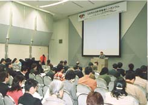

業界の問題に活発な意見交換 ＜シンポジウム・特別フォーラム＞
幕張メッセ国際会議場で開かれる、各種のシンポジウムや特別フォーラムが、「東京ゲームショウ」と併せて行われました。3月30日には、「教育機関のための第7回CESA人材育成シンポジウム」と「知的財産シンポジウム」、3月31日の午後3時からは特別フォーラム「テレビゲームの未来を考える」が開催され、業界の様々な問題について意見交換を行いました。
この特別フォーラムには精神科医・香山リカさん、エッセイスト・見城美枝子さん、お茶の水女子大学教授・坂元章氏、株式会社ティーアンドイーソフト代表取締役社長（CESA理事）・横山俊朗氏、作家で評論家の渡辺浩弐氏、慶應義塾大学教授・相田洋氏が出席。それぞれの立場から、テレビゲームの歴史と現状、今後についての活発なトークが交わされ来場者に好評でした。この様子はビデオ収録され、4月20日（金）、NHK教育放送の「金曜フォーラム」で放映予定です。

CESA知的財産権シンポジウム
出席者の真剣な姿が印象的でした
パネルディスカッション「テレビゲームの未来を
考える」 は TV番組としての収録も行われました
掲載された画像その他の内容の無断転載はお断りいたします。
当ホームページで公開された商品名は一般に各社の登録商標です。